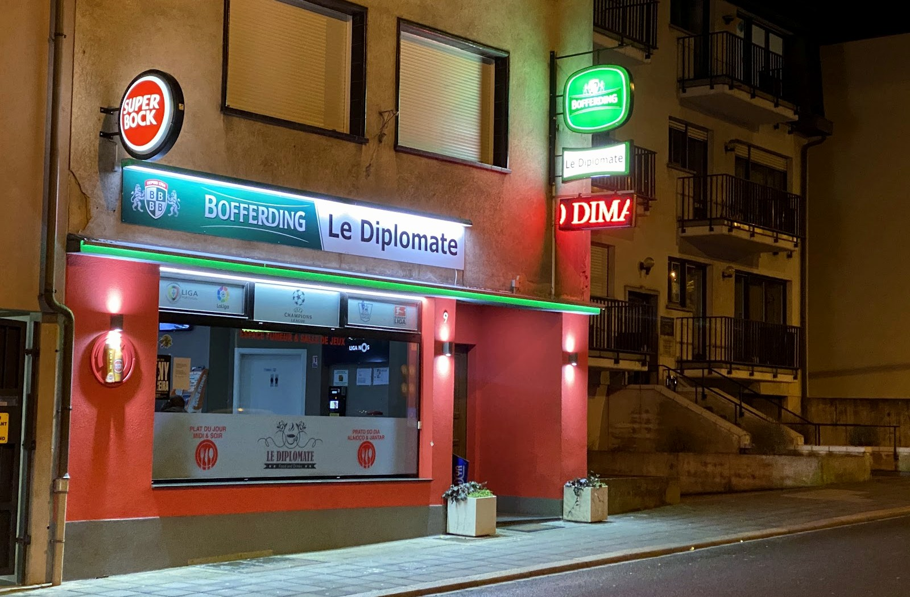
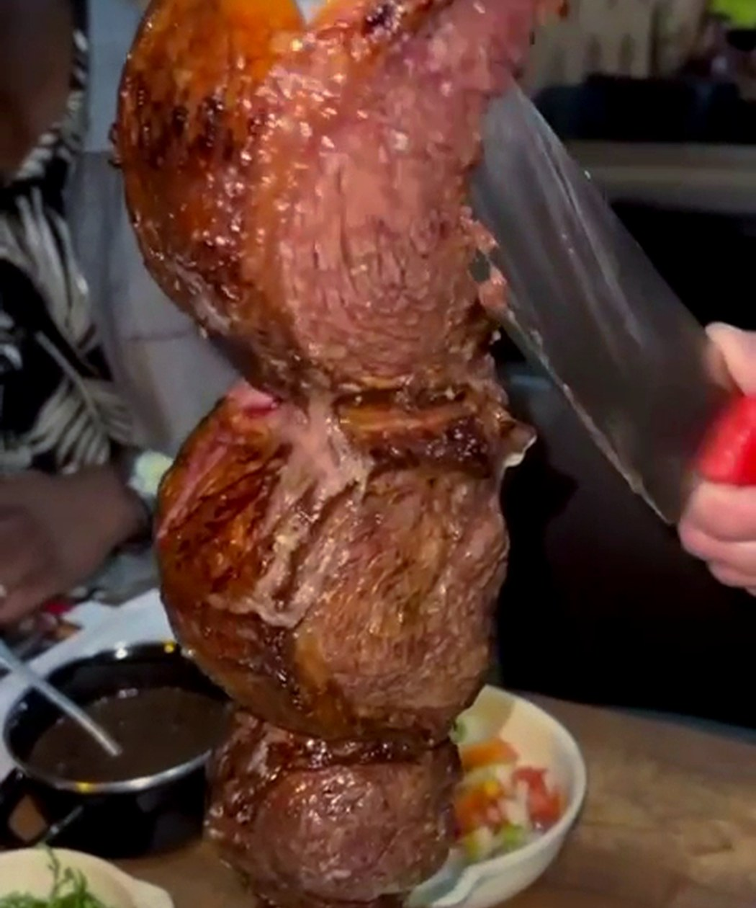
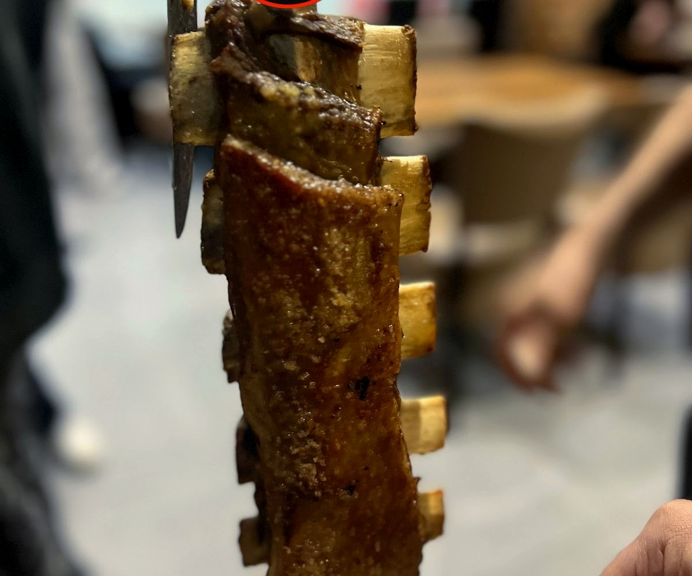
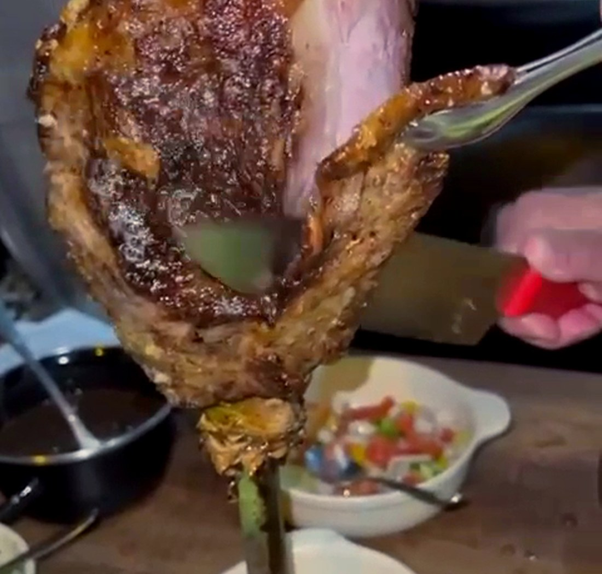
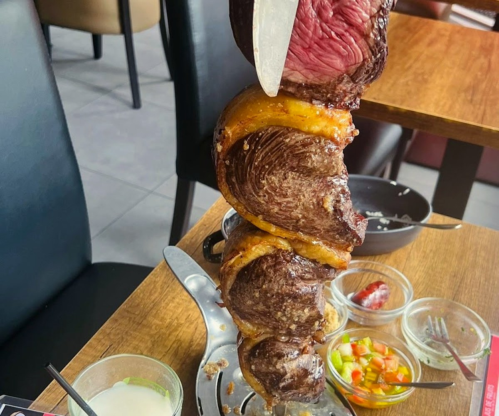
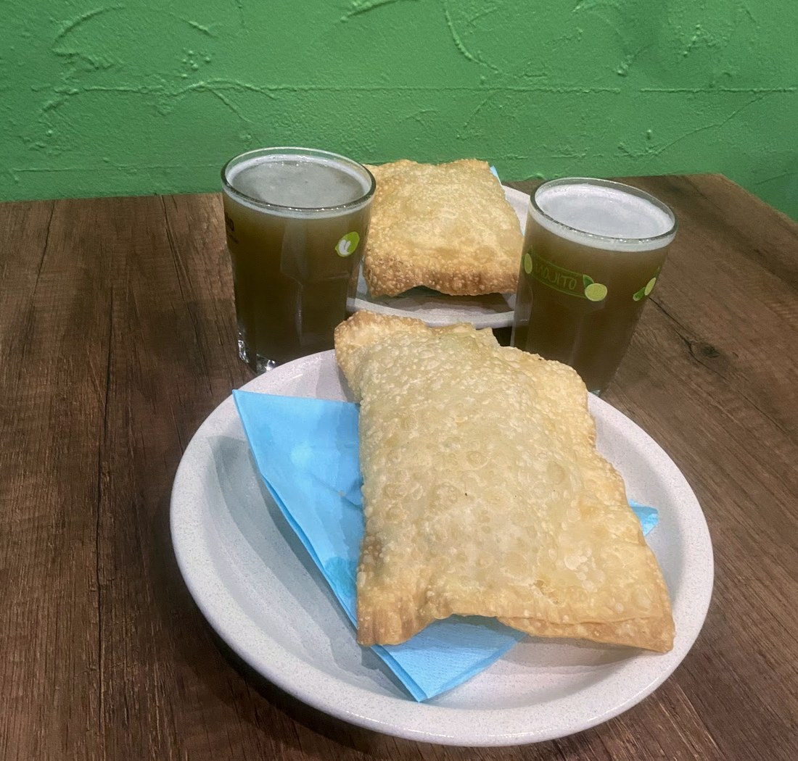
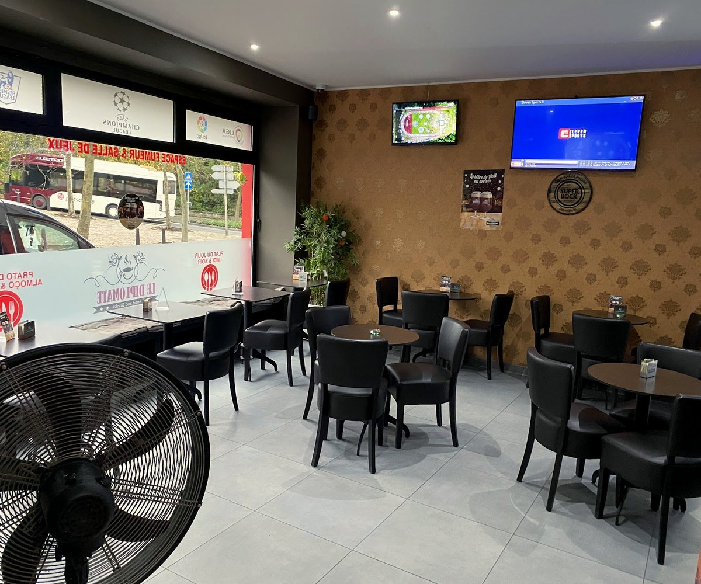

Le Diplomate
O sabor do Brasil à Dudelange — la picanha qui tourne, du café du matin au grill de minuit.
picanha, costela, au feu
la broche passe à table
café le matin, grill le soir
Le rodíziode picanha.
La broche passe de table en table, et on coupe une tranche de picanha tant que vous en voulez.
C'est le churrasco comme au Brésil : la viande grillée au feu, saignante et dorée, servie directement à la broche. Avec du riz, des haricots noirs, de la farofa et un ananas grillé — jusqu'à ce que vous disiez stop.

À la broche, à volontéLa viande, au charbon
Picanha, costela, assortiment grillé, accompagnements brésiliens et pastéis — la générosité du churrasco, à Dudelange.





Ce qu'on grille
Le churrasco et ses accompagnements brésiliens. Voici les plats de la maison — les prix se confirment sur place.
Le churrasco
Le café-bar
Les accompagnements
Plats relevés à partir de sources publiques (avis, annuaires, plateformes de livraison), à titre indicatif. Aucun prix n'est publié : la carte et les prix sont à confirmer avec la maison.
Nous trouver
L-3514 Dudelange
Ouvert tôt et tard · horaires à confirmer